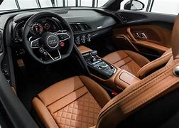

2021 AUDI R8 COUPE V10
The Audi R8 Coupé 2sets standards: with a power output of 610 hp, a top speed of 330 km/h and an acceleration from 0 to 100 km/h in 3.2 seconds, the top variant, i.e. the Audi R8 V10 plus, delivers stunning performance, which is further underlined by its even more honed design. There is no doubt that the Audi R8 Coupé has motorsport in its genes.
Price R2 397 000,17


R8 COUPE EXTERIOR
The exterior design of the Audi R8 coupe has always been beautifully proportioned. That said, it's not a classically beautiful car, and many will say that the design has become too edgy and feels almost forced. This is mainly because of the oddly shaped front intake grilles below the LED headlights - LED and laser headlights are standard on the Performance version. Still, we do like the three little slots below the hood, and those sweeping front arches that house 20-inch wheels. At the rear, LED taillights feature along with a massive diffuser that is home to dual exhaust tips. These are chrome on the base version and black on the Performance model and Panther edition. A retractable spoiler is also included, but Performance models get a fixed wing and many carbon accents. On the limited Panther version, red accents and special paint on both the body and the wheels help it stand out with a red and black theme, but any version of these coupes grabs attention.
DIMENSION
The dimensions of the R8 are typical for a supercar of this class, and as we've already mentioned, this is a nicely proportioned machine. It carries a length of 174.4 inches with a wheelbase measuring 104.3 inches. Height is just 48.7 inches from the ground while the width is rated at 76.4 inches excluding the side mirrors. The RWD models carry a base curb weight of 3,594 pounds, but the AWD Performance model has a higher rating of 3,913 lbs.
- Length 174.4 in
- Max Width 76.4 in
- Curb Weight 3,594.0 lbs
- Wheelbase 104.3 in
- Front Width 64.8 in
- Height 48.7 in
- Rear Width 63.0 in
EXTERIOR COLORS
The special edition Panther model is only available in Audi exclusive Panther Black paint with a crystal effect, but the other models have a lot more scope for individualization. As standard, the base R8 can be had in Ibis White or Vegas Yellow, but if you're willing to shell out a little more, you get access to metallic hues like Florett Silver, Kemora Gray, Mythos Black, Suzuka Gray, and Tango Red. A pearl hue called Daytona Gray is also offered, but all of them carry the same surcharge of R8 374,92. If that's not extravagant enough for you, the crystal finish of Ara Blue will put a R15 134,93-sized dent in your checkbook, but again, even that can be outdone. Audi exclusive special colors can be mixed up at R54 898,74, or you can get matte exclusive special finishes for a whopping R95 677,36. Brake calipers are black as standard, but red is available for R9 852,01, or you can get blue calipers on the Performance model as part of a R70 346,50 package.
COUPE PERFORMENCE
For the ultimate Audi R8 experience when it comes to flat-out performance, you'll obviously be interested in the R8, uh, Performance. This model's version of the Lamborghini-shared 5.2-liter V10 churns out an incredible 602 hp and 413 lb-ft of torque - with no assistance from electric motors, or turbos, or any other form of forced induction. The results are astonishing, not least of which when it comes to aural pleasure and instantaneous throttle response. 0-60 mph is dispatched in just 3.2 seconds, and if you keep the loud pedal buried in the firewall, you'll eventually run out of puff at 205 mph. The regular, RWD R8 isn't too bad either. It can get from 0 to 60 in just 3.6 seconds, and like its big brother tops out at over 200 mph - 201, to be exact. However, there are other differences too. The RWD R8 also gets a stiffer front anti-roll bar, a solid rear axle instead of a hollow one, and more negative camber in the rear, helping it remain planted around corners. The base R8 also gets adaptive dampers so that you can live a life of duality, while the Performance model is so focused on being sharp that fixed - although surprisingly comfy - dampers are fitted here. All versions of the R8 share one thing in common though - a seven-speed dual-clutch automatic transmission.
Engine And Transmission
Whichever version or model of the Audi R8 you get, you'll find a 5.2-liter naturally aspirated V10 residing somewhere behind your head. On the base model, this power plant generates 532 hp (down 30 from last year's base model that had AWD) and 398 lb-ft of torque. This is mated to a seven-speed S tronic dual-clutch automatic transmission, and it's rather good at cruising along, minding its own business, shifting smoothly and nonchalantly through every gear with speed and precision. Stick it into Sport mode and the gearbox has a tendency to downshift a little too early for relaxed driving, but that's just a sign that the Sport mode really is doing what it's supposed to. Of course, if you're not happy with letting the car decide when to shift, you can easily switch to manual mode and blast your way through the gears using the paddles. And speaking of blasting, the throttle response of this engine is phenomenal, not to mention its sound. Plant your right foot and the sound will egg you on more and more, encouraging you to chase the horizon. But because of the immense power, you'll be in triple-digit speeds very quickly, even if you're in the so-called base model. On the Performance model, you get 602 horses and 413 lb-ft of twist, and the experience is even more visceral. With the same transmission fitted here, getting into trouble on the road is just as effortless as in the RWD R8.
- Engine 5.2L V10 Gas
- Transmission 7-Speed Automatic
- Drivetrains AWD, RWD
Handling And Driving impressions
So how does it drive? Well, depending on which model you're behind the wheel of, the answer can be quite different. On the base model, power goes to the rear wheels. What does this mean? The ability to perform smokey burnouts and lurid slides with relative ease. But don't think that this is as well balanced as competitors like the Ferrari F8 Tributo or your average Porsche. Sure, it's good, but there's a purity of purpose that is missing, and one gets the feeling that this was always meant to be something else (an AWD vehicle). That said, there is a clear sharpness that is missing when you get into the Performance model. But fear not. While it sounds like we're downplaying the abilities of the R8, it's still a phenomenal machine and has a remarkable level of feel and feedback from the steering wheel, feel that is fast becoming a rare and precious commodity in the world of electric steering systems. And while the Performance model does feel a little less lively, the feeling of security provided by AWD when you have over 600 hp under your right foot cannot be overstated. In daily driving, the Performance model is a little harsher than the regular version because it doesn't have the cheaper variant's adaptive dampers, but it's not jarring or uncomfortable. Overall, this is still one of the most user-friendly and outright usable supercars on the market.
COUPE GAS MILEAGE
The only downside to the shrieking wail of the Audi R8's V10 is that it's not cheap to maintain. Gas mileage figures for the lighter, RWD model are naturally a little lower, but the other benefit that this model has is a slightly larger gas tank. The RWD version will return 14/23/17 mpg on the EPA's city/highway/combined cycles. With a 21.9-gallon gas tank, you can expect an average mixed driving range of around 372 miles. The AWD Performance version isn't much worse though, returning 13/20/16 mpg on the same cycles, but with a 19.2-gallon gas tank, range drops all the way to around 307 miles with mixed driving.
- Fuel Tank Capacity 21.9 Gallons
Interior
The interior of the 2021 Audi R8 is typically classy and elegant. It's simple but with enough drama to make you feel like you're sitting somewhere special, and particularly in the Performance variant, 'special' gets turned up to 11 thanks to lashings of carbon fiber and special racing shell seats. But don't fret if you prefer the RWD model - both types of R8 get a 12.3-inch configurable driver info display that doubles as the interface for your infotainment system, and for those who desire more than the wail of a V10, an available 13-speaker B&O sound system can he bad in conjunction with extended leather for further luxury.
Seating And Interior Space
The Audi R8 loses practicality points to its chief competition the Porsche 911 due to the fact that it is a two-seater, but that makes it even more attractive to those who want that true supercar experience. In the base model, you get 14-way power seats as standard that offer plenty of comfort and support, and the view out as well as the general ergonomics of the seating experience are excellent. If you want more scope for adjustment, 18-way seats are also offered, but in the Performance model, you get racy bucket seats as standard that offer immense support. The only downside is that getting in and out without grazing the aggressive bolsters can be tricky.
- Seating Capacity 2-seater
- Front Leg Room 40.9 in
- Front Head Room 38.5 in
Interior colors and Material
Color options are not in short supply when it comes to the interior. Of course, you get leather as standard, but full leather costs R42 327,60 and contrast stitching adds a further R7 054,35 bucks. In addition, the vast majority of these options require extra packages like the Full Leather package, Premium package, and the Contrast Stitching package to be unlocked. At least the choices are vast: options include Black with stitching in Ara Blue, Express Red, Rock Gray, Vegas Yellow, or plain black. Also offered are Express Red leather with Steel Gray stitching, Palomino Brown with Steel Gray stitching, or Pastel Silver with Rock Gray stitching. For those who want a really fancy finish, quilted leather in the same combinations will set you back an extra R70 532. The Performance variant gets fewer color combos, but you do also get mixes of Fine Nappa leather and Alcantara.
Home